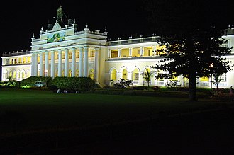
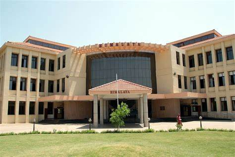
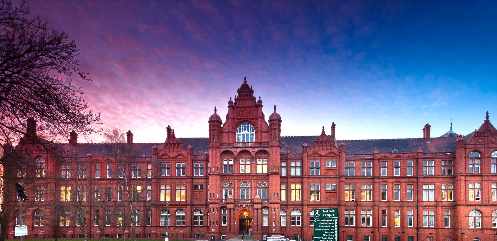
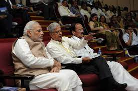
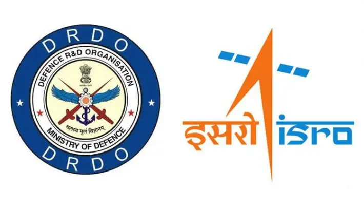
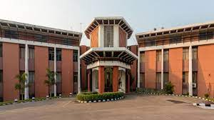
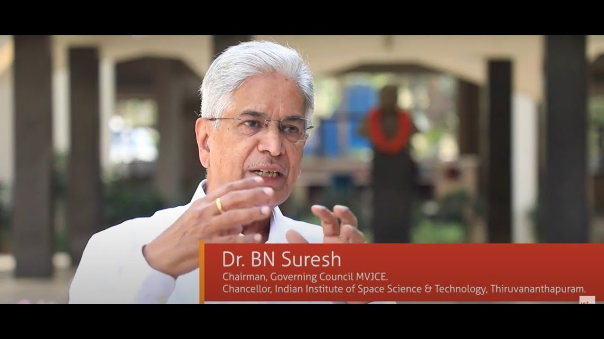

Suresh's father was an agriculturist in Hosakere, Andagar,
a small village near Koppa town situated near Sringeri in Karnataka,
India.He attended his entire schooling in Andagar and Koppa and studied
in Kannada medium.
Educational Qualification of B.N Suresh

Btech from Mysore University

Mtech from IIT Madras

Phd From Salford university
Achievements




He is presently the Chancellor, Indian Institute of Space Science and Technology (IIST)
at Thiruvananthapuram and Honorary Distinguished Professor at ISRO HQ. He was President
Indian National Academy of Engineering, INAE at Delhi, for four years during 2015 to 2018.
He served as the Director of Vikram Sarabhai Space Centre (VSSC), Thiruvananthapuram during
the period 2003–2007. He is known for his contribution to the development of Indian launch vehicles,
Space Capsule Recovery Experiments (SRE) and also for R& D management.[1] Suresh also served as the
founding director of Indian Institute of Space Science and Technology (IIST), Thiruvananthapuram.
He retired from IIST in November 2010. He was Vikram Sarabhai Distinguished Professor at ISRO HQ
for 5 years since November 2010 and also a professor at IIT, Mumbai and MIT, Manipal for 3 years.
He was a member of the board of governors (BOG) for IIT, Madras for 7 years until July 2018. He is
the vice chair for the Design Division of Aeronautical Society of India. He is one of the associate
editors of the book From Fishing Hamlet To Red Planet and a co-author of Ever Upwards: ISRO in Images,
both tracing the history of Indian Space Research Organisation. He is the President of the reputed
Jnanadeepa Senior Secondary School and Sri Aurobindo Foundation for Education (Shivamogga, Karnataka)
Suresh is a recipient of the Indian civilian honors, Padma Bhushan and Padma Shri which he received in
2013 and 2002 respectively.He has also received the Aryabhata Award" from the Astronautical society of
India in 2009, besides several other awards.